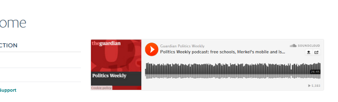

You can add audio clips that have been stored in SoundCloud or Audioboo to your webpage.
Go to your clip on audioboo or SoundCloud and copy the web address.
Go to the page where you would like to add an audio clip. Click on Edit on the toolbar at the top of the page.
Go to the Video link (youtube) box on the right hand side of the page and paste the web address of your audio clip. Save your page - the Save button is at the bottom of the page.
Scroll to the bottom of the page. Click on Save.
The audio clip displays at the top of your page.